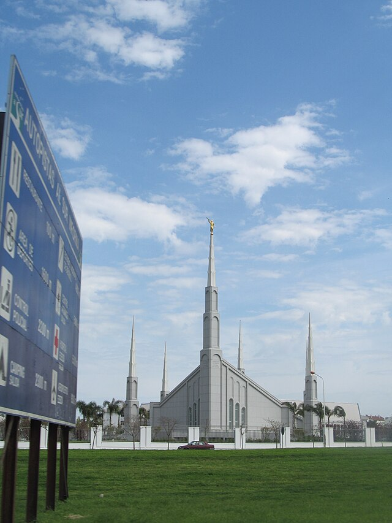

Temple Album
☰
Home
Old
New
Large
Small
Featured Temples
Salt Lake Temple
Rome Italy Temple
Frankfurt Germany Temple
Tokyo Japan Temple
Sydney Australia Temple
Durban South Africa Temple
Salt Lake Temple
London England Temple

Buenos Aires Argentina Temple